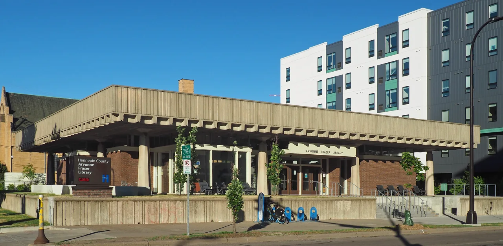

Civic landscape · Minneapolis
Peavey Plaza
Follow the terraces from street level to the reflecting pool, then see how the plaza was preserved.

Docomomo US/MN · Design concept
Explore the architecture, landscapes, and histories of Minnesota’s Modern Movement.
Explore Peavey Plaza Try tour ticketsScroll to move into Peavey Plaza
Sharon Mollerus, 2025 · CC BY 4.0 · Cropped for display; homepage depth motion and fallback water video are digital adaptations by SZARA, not documentary footage.
Civic landscape · Minneapolis
Follow the terraces from street level to the reflecting pool, then see how the plaza was preserved.

Library · Dinkytown
Explore Ralph Rapson’s Brutalist library and its renovation.
McGhiever, 2021 · CC BY-SA 4.0 · Resized and cropped; adaptation under the same license.
From the archive
A walking tour, a symposium recording and a building record tell different parts of the same story. Search across the chapter’s work by subject or year.
Tours and events
No new tour date was listed in the chapter calendar when this concept was prepared on November 24, 2026. The chapter posts new programs throughout the year.
Visit the current chapter calendar
Event archive · October 2026
The chapter’s 2026 National Tour Day began at Peavey Plaza as part of the year’s Recreation and Play theme.
View the archived tour Try the registration experienceNews and community
Chapter news
Follow the chapter’s preservation work, announcements and stories.
Social and video
Explore recorded programs and educational material on the chapter’s video channel. This curated link illustrates the social tile; live feed selection is subject to chapter approval.
The Minnesota chapter documents and advocates for the preservation of Modern Movement architecture and landscapes.
Contact and chapter information · Join · Donate · Volunteer publishing preview